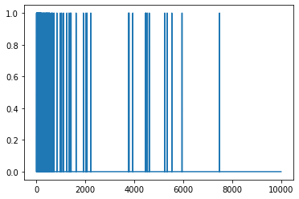
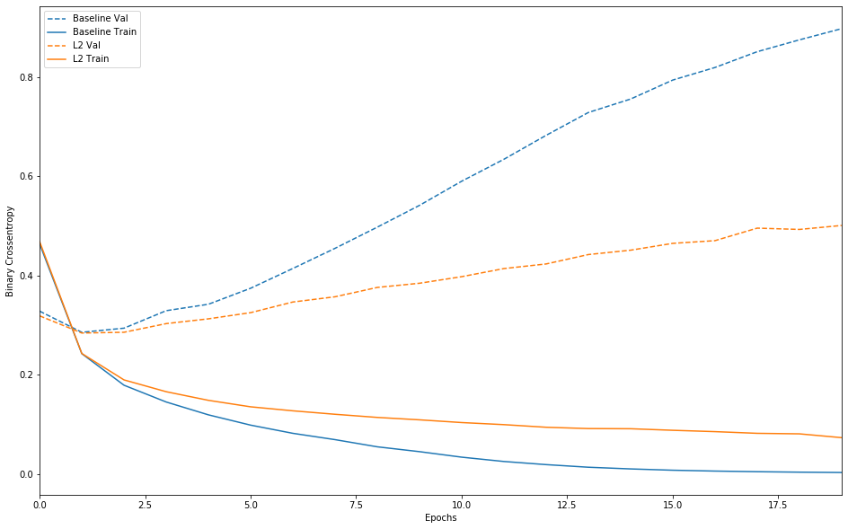
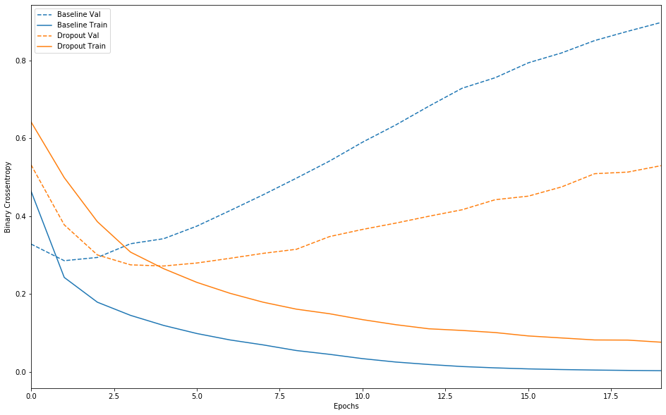

Subajuste y sobreajuste¶
30 min | Última modificación: Julio 09, 2019
Basado en https://www.tensorflow.org/beta/tutorials/keras/overfit_and_underfit
Preparación¶
[1]:
from __future__ import absolute_import, division, print_function
import tensorflow as tf
from tensorflow import keras
import numpy as np
import matplotlib.pyplot as plt
print(tf.__version__)
2.0.0-beta1
Datos¶
[2]:
NUM_WORDS = 10000
(train_data, train_labels), (test_data, test_labels) = keras.datasets.imdb.load_data(num_words=NUM_WORDS)
def multi_hot_sequences(sequences, dimension):
# Create an all-zero matrix of shape (len(sequences), dimension)
results = np.zeros((len(sequences), dimension))
for i, word_indices in enumerate(sequences):
results[i, word_indices] = 1.0 # set specific indices of results[i] to 1s
return results
train_data = multi_hot_sequences(train_data, dimension=NUM_WORDS)
test_data = multi_hot_sequences(test_data, dimension=NUM_WORDS)
[3]:
plt.plot(train_data[0]);

Modelo base¶
Especificación del modelo¶
[4]:
baseline_model = keras.Sequential([
# `input_shape` is only required here so that `.summary` works.
keras.layers.Dense(16, activation=tf.nn.relu, input_shape=(NUM_WORDS,)),
keras.layers.Dense(16, activation=tf.nn.relu),
keras.layers.Dense(1, activation=tf.nn.sigmoid)
])
baseline_model.compile(
optimizer='adam',
loss='binary_crossentropy',
metrics=['accuracy', 'binary_crossentropy'])
baseline_model.summary()
Model: "sequential"
_________________________________________________________________
Layer (type) Output Shape Param #
=================================================================
dense (Dense) (None, 16) 160016
_________________________________________________________________
dense_1 (Dense) (None, 16) 272
_________________________________________________________________
dense_2 (Dense) (None, 1) 17
=================================================================
Total params: 160,305
Trainable params: 160,305
Non-trainable params: 0
_________________________________________________________________
Entrenamiento¶
[5]:
baseline_history = baseline_model.fit(
train_data,
train_labels,
epochs=20,
batch_size=512,
validation_data=(test_data, test_labels),
verbose=2)
WARNING: Logging before flag parsing goes to stderr.
W0709 15:59:36.114344 140261028558656 deprecation.py:323] From /usr/local/lib/python3.6/dist-packages/tensorflow/python/ops/math_grad.py:1250: add_dispatch_support.<locals>.wrapper (from tensorflow.python.ops.array_ops) is deprecated and will be removed in a future version.
Instructions for updating:
Use tf.where in 2.0, which has the same broadcast rule as np.where
Train on 25000 samples, validate on 25000 samples
Epoch 1/20
25000/25000 - 4s - loss: 0.4643 - accuracy: 0.8175 - binary_crossentropy: 0.4643 - val_loss: 0.3286 - val_accuracy: 0.8758 - val_binary_crossentropy: 0.3286
Epoch 2/20
25000/25000 - 3s - loss: 0.2429 - accuracy: 0.9121 - binary_crossentropy: 0.2429 - val_loss: 0.2859 - val_accuracy: 0.8868 - val_binary_crossentropy: 0.2859
Epoch 3/20
25000/25000 - 3s - loss: 0.1792 - accuracy: 0.9366 - binary_crossentropy: 0.1792 - val_loss: 0.2942 - val_accuracy: 0.8827 - val_binary_crossentropy: 0.2942
Epoch 4/20
25000/25000 - 3s - loss: 0.1454 - accuracy: 0.9497 - binary_crossentropy: 0.1454 - val_loss: 0.3295 - val_accuracy: 0.8727 - val_binary_crossentropy: 0.3295
Epoch 5/20
25000/25000 - 3s - loss: 0.1195 - accuracy: 0.9599 - binary_crossentropy: 0.1195 - val_loss: 0.3425 - val_accuracy: 0.8736 - val_binary_crossentropy: 0.3425
Epoch 6/20
25000/25000 - 3s - loss: 0.0988 - accuracy: 0.9688 - binary_crossentropy: 0.0988 - val_loss: 0.3747 - val_accuracy: 0.8705 - val_binary_crossentropy: 0.3747
Epoch 7/20
25000/25000 - 3s - loss: 0.0823 - accuracy: 0.9748 - binary_crossentropy: 0.0823 - val_loss: 0.4146 - val_accuracy: 0.8669 - val_binary_crossentropy: 0.4146
Epoch 8/20
25000/25000 - 3s - loss: 0.0695 - accuracy: 0.9804 - binary_crossentropy: 0.0695 - val_loss: 0.4552 - val_accuracy: 0.8627 - val_binary_crossentropy: 0.4552
Epoch 9/20
25000/25000 - 3s - loss: 0.0551 - accuracy: 0.9864 - binary_crossentropy: 0.0551 - val_loss: 0.4979 - val_accuracy: 0.8614 - val_binary_crossentropy: 0.4979
Epoch 10/20
25000/25000 - 3s - loss: 0.0453 - accuracy: 0.9895 - binary_crossentropy: 0.0453 - val_loss: 0.5418 - val_accuracy: 0.8583 - val_binary_crossentropy: 0.5418
Epoch 11/20
25000/25000 - 3s - loss: 0.0342 - accuracy: 0.9932 - binary_crossentropy: 0.0342 - val_loss: 0.5905 - val_accuracy: 0.8554 - val_binary_crossentropy: 0.5905
Epoch 12/20
25000/25000 - 3s - loss: 0.0255 - accuracy: 0.9961 - binary_crossentropy: 0.0255 - val_loss: 0.6347 - val_accuracy: 0.8546 - val_binary_crossentropy: 0.6347
Epoch 13/20
25000/25000 - 3s - loss: 0.0192 - accuracy: 0.9977 - binary_crossentropy: 0.0192 - val_loss: 0.6829 - val_accuracy: 0.8518 - val_binary_crossentropy: 0.6829
Epoch 14/20
25000/25000 - 3s - loss: 0.0139 - accuracy: 0.9989 - binary_crossentropy: 0.0139 - val_loss: 0.7290 - val_accuracy: 0.8504 - val_binary_crossentropy: 0.7290
Epoch 15/20
25000/25000 - 3s - loss: 0.0105 - accuracy: 0.9994 - binary_crossentropy: 0.0105 - val_loss: 0.7561 - val_accuracy: 0.8509 - val_binary_crossentropy: 0.7561
Epoch 16/20
25000/25000 - 3s - loss: 0.0079 - accuracy: 0.9999 - binary_crossentropy: 0.0079 - val_loss: 0.7944 - val_accuracy: 0.8502 - val_binary_crossentropy: 0.7944
Epoch 17/20
25000/25000 - 3s - loss: 0.0062 - accuracy: 0.9999 - binary_crossentropy: 0.0062 - val_loss: 0.8197 - val_accuracy: 0.8499 - val_binary_crossentropy: 0.8197
Epoch 18/20
25000/25000 - 3s - loss: 0.0049 - accuracy: 0.9999 - binary_crossentropy: 0.0049 - val_loss: 0.8515 - val_accuracy: 0.8497 - val_binary_crossentropy: 0.8515
Epoch 19/20
25000/25000 - 3s - loss: 0.0040 - accuracy: 1.0000 - binary_crossentropy: 0.0040 - val_loss: 0.8754 - val_accuracy: 0.8490 - val_binary_crossentropy: 0.8754
Epoch 20/20
25000/25000 - 3s - loss: 0.0033 - accuracy: 1.0000 - binary_crossentropy: 0.0033 - val_loss: 0.8980 - val_accuracy: 0.8488 - val_binary_crossentropy: 0.8980
Modelo más pequeño¶
Especificación del modelo¶
[6]:
smaller_model = keras.Sequential([
keras.layers.Dense(4, activation=tf.nn.relu, input_shape=(NUM_WORDS,)),
keras.layers.Dense(4, activation=tf.nn.relu),
keras.layers.Dense(1, activation=tf.nn.sigmoid)
])
smaller_model.compile(optimizer='adam',
loss='binary_crossentropy',
metrics=['accuracy', 'binary_crossentropy'])
smaller_model.summary()
Model: "sequential_1"
_________________________________________________________________
Layer (type) Output Shape Param #
=================================================================
dense_3 (Dense) (None, 4) 40004
_________________________________________________________________
dense_4 (Dense) (None, 4) 20
_________________________________________________________________
dense_5 (Dense) (None, 1) 5
=================================================================
Total params: 40,029
Trainable params: 40,029
Non-trainable params: 0
_________________________________________________________________
Entrenamiento¶
[7]:
smaller_history = smaller_model.fit(
train_data,
train_labels,
epochs=20,
batch_size=512,
validation_data=(test_data, test_labels),
verbose=2)
Train on 25000 samples, validate on 25000 samples
Epoch 1/20
25000/25000 - 3s - loss: 0.6440 - accuracy: 0.6120 - binary_crossentropy: 0.6440 - val_loss: 0.5821 - val_accuracy: 0.6878 - val_binary_crossentropy: 0.5821
Epoch 2/20
25000/25000 - 3s - loss: 0.5285 - accuracy: 0.7952 - binary_crossentropy: 0.5285 - val_loss: 0.5136 - val_accuracy: 0.7932 - val_binary_crossentropy: 0.5136
Epoch 3/20
25000/25000 - 3s - loss: 0.4689 - accuracy: 0.8656 - binary_crossentropy: 0.4689 - val_loss: 0.4819 - val_accuracy: 0.8231 - val_binary_crossentropy: 0.4819
Epoch 4/20
25000/25000 - 3s - loss: 0.4312 - accuracy: 0.8971 - binary_crossentropy: 0.4312 - val_loss: 0.4591 - val_accuracy: 0.8488 - val_binary_crossentropy: 0.4591
Epoch 5/20
25000/25000 - 3s - loss: 0.4020 - accuracy: 0.9146 - binary_crossentropy: 0.4020 - val_loss: 0.4456 - val_accuracy: 0.8568 - val_binary_crossentropy: 0.4456
Epoch 6/20
25000/25000 - 3s - loss: 0.3782 - accuracy: 0.9286 - binary_crossentropy: 0.3782 - val_loss: 0.4316 - val_accuracy: 0.8700 - val_binary_crossentropy: 0.4316
Epoch 7/20
25000/25000 - 3s - loss: 0.3570 - accuracy: 0.9391 - binary_crossentropy: 0.3570 - val_loss: 0.4226 - val_accuracy: 0.8725 - val_binary_crossentropy: 0.4226
Epoch 8/20
25000/25000 - 3s - loss: 0.3385 - accuracy: 0.9469 - binary_crossentropy: 0.3385 - val_loss: 0.4222 - val_accuracy: 0.8670 - val_binary_crossentropy: 0.4222
Epoch 9/20
25000/25000 - 3s - loss: 0.3213 - accuracy: 0.9532 - binary_crossentropy: 0.3213 - val_loss: 0.4244 - val_accuracy: 0.8636 - val_binary_crossentropy: 0.4244
Epoch 10/20
25000/25000 - 3s - loss: 0.3056 - accuracy: 0.9590 - binary_crossentropy: 0.3056 - val_loss: 0.4161 - val_accuracy: 0.8682 - val_binary_crossentropy: 0.4161
Epoch 11/20
25000/25000 - 3s - loss: 0.2913 - accuracy: 0.9642 - binary_crossentropy: 0.2913 - val_loss: 0.4194 - val_accuracy: 0.8661 - val_binary_crossentropy: 0.4194
Epoch 12/20
25000/25000 - 3s - loss: 0.2763 - accuracy: 0.9678 - binary_crossentropy: 0.2763 - val_loss: 0.4197 - val_accuracy: 0.8676 - val_binary_crossentropy: 0.4197
Epoch 13/20
25000/25000 - 3s - loss: 0.2621 - accuracy: 0.9708 - binary_crossentropy: 0.2621 - val_loss: 0.4260 - val_accuracy: 0.8665 - val_binary_crossentropy: 0.4260
Epoch 14/20
25000/25000 - 3s - loss: 0.2485 - accuracy: 0.9741 - binary_crossentropy: 0.2485 - val_loss: 0.4361 - val_accuracy: 0.8653 - val_binary_crossentropy: 0.4361
Epoch 15/20
25000/25000 - 3s - loss: 0.2361 - accuracy: 0.9774 - binary_crossentropy: 0.2361 - val_loss: 0.4504 - val_accuracy: 0.8630 - val_binary_crossentropy: 0.4504
Epoch 16/20
25000/25000 - 3s - loss: 0.2241 - accuracy: 0.9802 - binary_crossentropy: 0.2241 - val_loss: 0.4494 - val_accuracy: 0.8643 - val_binary_crossentropy: 0.4494
Epoch 17/20
25000/25000 - 3s - loss: 0.2113 - accuracy: 0.9832 - binary_crossentropy: 0.2113 - val_loss: 0.4366 - val_accuracy: 0.8645 - val_binary_crossentropy: 0.4366
Epoch 18/20
25000/25000 - 3s - loss: 0.1761 - accuracy: 0.9849 - binary_crossentropy: 0.1761 - val_loss: 0.4246 - val_accuracy: 0.8650 - val_binary_crossentropy: 0.4246
Epoch 19/20
25000/25000 - 3s - loss: 0.1434 - accuracy: 0.9856 - binary_crossentropy: 0.1434 - val_loss: 0.4432 - val_accuracy: 0.8643 - val_binary_crossentropy: 0.4432
Epoch 20/20
25000/25000 - 3s - loss: 0.1193 - accuracy: 0.9876 - binary_crossentropy: 0.1193 - val_loss: 0.4701 - val_accuracy: 0.8632 - val_binary_crossentropy: 0.4701
Modelo más grande¶
Especificación¶
[8]:
bigger_model = keras.models.Sequential([
keras.layers.Dense(512, activation=tf.nn.relu, input_shape=(NUM_WORDS,)),
keras.layers.Dense(512, activation=tf.nn.relu),
keras.layers.Dense(1, activation=tf.nn.sigmoid)
])
bigger_model.compile(optimizer='adam',
loss='binary_crossentropy',
metrics=['accuracy','binary_crossentropy'])
bigger_model.summary()
Model: "sequential_2"
_________________________________________________________________
Layer (type) Output Shape Param #
=================================================================
dense_6 (Dense) (None, 512) 5120512
_________________________________________________________________
dense_7 (Dense) (None, 512) 262656
_________________________________________________________________
dense_8 (Dense) (None, 1) 513
=================================================================
Total params: 5,383,681
Trainable params: 5,383,681
Non-trainable params: 0
_________________________________________________________________
Entrenamiento¶
[9]:
bigger_history = bigger_model.fit(
train_data,
train_labels,
epochs=20,
batch_size=512,
validation_data=(test_data, test_labels),
verbose=2)
Train on 25000 samples, validate on 25000 samples
Epoch 1/20
25000/25000 - 6s - loss: 0.3416 - accuracy: 0.8550 - binary_crossentropy: 0.3416 - val_loss: 0.2999 - val_accuracy: 0.8785 - val_binary_crossentropy: 0.2999
Epoch 2/20
25000/25000 - 6s - loss: 0.1405 - accuracy: 0.9492 - binary_crossentropy: 0.1405 - val_loss: 0.3347 - val_accuracy: 0.8727 - val_binary_crossentropy: 0.3347
Epoch 3/20
25000/25000 - 6s - loss: 0.0438 - accuracy: 0.9879 - binary_crossentropy: 0.0438 - val_loss: 0.4577 - val_accuracy: 0.8686 - val_binary_crossentropy: 0.4577
Epoch 4/20
25000/25000 - 6s - loss: 0.0068 - accuracy: 0.9989 - binary_crossentropy: 0.0068 - val_loss: 0.6141 - val_accuracy: 0.8684 - val_binary_crossentropy: 0.6141
Epoch 5/20
25000/25000 - 7s - loss: 0.0011 - accuracy: 1.0000 - binary_crossentropy: 0.0011 - val_loss: 0.6975 - val_accuracy: 0.8702 - val_binary_crossentropy: 0.6975
Epoch 6/20
25000/25000 - 6s - loss: 4.8094e-04 - accuracy: 1.0000 - binary_crossentropy: 4.8094e-04 - val_loss: 0.7302 - val_accuracy: 0.8697 - val_binary_crossentropy: 0.7302
Epoch 7/20
25000/25000 - 7s - loss: 1.5795e-04 - accuracy: 1.0000 - binary_crossentropy: 1.5795e-04 - val_loss: 0.7539 - val_accuracy: 0.8702 - val_binary_crossentropy: 0.7539
Epoch 8/20
25000/25000 - 7s - loss: 9.5056e-05 - accuracy: 1.0000 - binary_crossentropy: 9.5056e-05 - val_loss: 0.7734 - val_accuracy: 0.8703 - val_binary_crossentropy: 0.7734
Epoch 9/20
25000/25000 - 7s - loss: 7.2012e-05 - accuracy: 1.0000 - binary_crossentropy: 7.2012e-05 - val_loss: 0.7886 - val_accuracy: 0.8704 - val_binary_crossentropy: 0.7886
Epoch 10/20
25000/25000 - 7s - loss: 5.7203e-05 - accuracy: 1.0000 - binary_crossentropy: 5.7202e-05 - val_loss: 0.8014 - val_accuracy: 0.8702 - val_binary_crossentropy: 0.8014
Epoch 11/20
25000/25000 - 6s - loss: 4.6546e-05 - accuracy: 1.0000 - binary_crossentropy: 4.6546e-05 - val_loss: 0.8129 - val_accuracy: 0.8702 - val_binary_crossentropy: 0.8129
Epoch 12/20
25000/25000 - 6s - loss: 3.8804e-05 - accuracy: 1.0000 - binary_crossentropy: 3.8804e-05 - val_loss: 0.8228 - val_accuracy: 0.8703 - val_binary_crossentropy: 0.8228
Epoch 13/20
25000/25000 - 6s - loss: 3.2677e-05 - accuracy: 1.0000 - binary_crossentropy: 3.2677e-05 - val_loss: 0.8317 - val_accuracy: 0.8699 - val_binary_crossentropy: 0.8317
Epoch 14/20
25000/25000 - 6s - loss: 2.7913e-05 - accuracy: 1.0000 - binary_crossentropy: 2.7913e-05 - val_loss: 0.8405 - val_accuracy: 0.8704 - val_binary_crossentropy: 0.8405
Epoch 15/20
25000/25000 - 7s - loss: 2.4001e-05 - accuracy: 1.0000 - binary_crossentropy: 2.4001e-05 - val_loss: 0.8485 - val_accuracy: 0.8703 - val_binary_crossentropy: 0.8485
Epoch 16/20
25000/25000 - 7s - loss: 2.0842e-05 - accuracy: 1.0000 - binary_crossentropy: 2.0842e-05 - val_loss: 0.8561 - val_accuracy: 0.8702 - val_binary_crossentropy: 0.8561
Epoch 17/20
25000/25000 - 7s - loss: 1.8154e-05 - accuracy: 1.0000 - binary_crossentropy: 1.8154e-05 - val_loss: 0.8635 - val_accuracy: 0.8704 - val_binary_crossentropy: 0.8635
Epoch 18/20
25000/25000 - 7s - loss: 1.5898e-05 - accuracy: 1.0000 - binary_crossentropy: 1.5898e-05 - val_loss: 0.8706 - val_accuracy: 0.8704 - val_binary_crossentropy: 0.8706
Epoch 19/20
25000/25000 - 7s - loss: 1.3992e-05 - accuracy: 1.0000 - binary_crossentropy: 1.3992e-05 - val_loss: 0.8771 - val_accuracy: 0.8705 - val_binary_crossentropy: 0.8771
Epoch 20/20
25000/25000 - 6s - loss: 1.2365e-05 - accuracy: 1.0000 - binary_crossentropy: 1.2365e-05 - val_loss: 0.8838 - val_accuracy: 0.8706 - val_binary_crossentropy: 0.8838
Evolución de la pérdida para los modelos especificados¶
[10]:
def plot_history(histories, key='binary_crossentropy'):
plt.figure(figsize=(16,10))
for name, history in histories:
val = plt.plot(history.epoch, history.history['val_'+key],
'--', label=name.title()+' Val')
plt.plot(history.epoch, history.history[key], color=val[0].get_color(),
label=name.title()+' Train')
plt.xlabel('Epochs')
plt.ylabel(key.replace('_',' ').title())
plt.legend()
plt.xlim([0,max(history.epoch)])
plot_history(
[('baseline', baseline_history),
('smaller', smaller_history),
('bigger', bigger_history)])

Estrategías para evitar el sobreajuste¶
Regularización L2¶
[11]:
l2_model = keras.models.Sequential([
keras.layers.Dense(16,
kernel_regularizer=keras.regularizers.l2(0.001),
activation=tf.nn.relu, input_shape=(NUM_WORDS,)),
keras.layers.Dense(16,
kernel_regularizer=keras.regularizers.l2(0.001),
activation=tf.nn.relu),
keras.layers.Dense(1, activation=tf.nn.sigmoid)
])
l2_model.compile(
optimizer='adam',
loss='binary_crossentropy',
metrics=['accuracy', 'binary_crossentropy'])
l2_model_history = l2_model.fit(
train_data,
train_labels,
epochs=20,
batch_size=512,
validation_data=(test_data, test_labels),
verbose=2)
Train on 25000 samples, validate on 25000 samples
Epoch 1/20
25000/25000 - 3s - loss: 0.5108 - accuracy: 0.8095 - binary_crossentropy: 0.4689 - val_loss: 0.3631 - val_accuracy: 0.8796 - val_binary_crossentropy: 0.3191
Epoch 2/20
25000/25000 - 3s - loss: 0.2908 - accuracy: 0.9114 - binary_crossentropy: 0.2432 - val_loss: 0.3346 - val_accuracy: 0.8871 - val_binary_crossentropy: 0.2844
Epoch 3/20
25000/25000 - 3s - loss: 0.2422 - accuracy: 0.9332 - binary_crossentropy: 0.1899 - val_loss: 0.3397 - val_accuracy: 0.8850 - val_binary_crossentropy: 0.2860
Epoch 4/20
25000/25000 - 3s - loss: 0.2215 - accuracy: 0.9424 - binary_crossentropy: 0.1661 - val_loss: 0.3600 - val_accuracy: 0.8782 - val_binary_crossentropy: 0.3034
Epoch 5/20
25000/25000 - 3s - loss: 0.2062 - accuracy: 0.9501 - binary_crossentropy: 0.1488 - val_loss: 0.3714 - val_accuracy: 0.8768 - val_binary_crossentropy: 0.3131
Epoch 6/20
25000/25000 - 3s - loss: 0.1949 - accuracy: 0.9546 - binary_crossentropy: 0.1357 - val_loss: 0.3852 - val_accuracy: 0.8739 - val_binary_crossentropy: 0.3255
Epoch 7/20
25000/25000 - 3s - loss: 0.1880 - accuracy: 0.9576 - binary_crossentropy: 0.1276 - val_loss: 0.4080 - val_accuracy: 0.8702 - val_binary_crossentropy: 0.3470
Epoch 8/20
25000/25000 - 3s - loss: 0.1823 - accuracy: 0.9592 - binary_crossentropy: 0.1207 - val_loss: 0.4196 - val_accuracy: 0.8696 - val_binary_crossentropy: 0.3575
Epoch 9/20
25000/25000 - 3s - loss: 0.1771 - accuracy: 0.9601 - binary_crossentropy: 0.1143 - val_loss: 0.4395 - val_accuracy: 0.8642 - val_binary_crossentropy: 0.3763
Epoch 10/20
25000/25000 - 3s - loss: 0.1730 - accuracy: 0.9637 - binary_crossentropy: 0.1095 - val_loss: 0.4488 - val_accuracy: 0.8662 - val_binary_crossentropy: 0.3848
Epoch 11/20
25000/25000 - 3s - loss: 0.1683 - accuracy: 0.9658 - binary_crossentropy: 0.1040 - val_loss: 0.4628 - val_accuracy: 0.8638 - val_binary_crossentropy: 0.3981
Epoch 12/20
25000/25000 - 3s - loss: 0.1648 - accuracy: 0.9657 - binary_crossentropy: 0.0998 - val_loss: 0.4797 - val_accuracy: 0.8610 - val_binary_crossentropy: 0.4144
Epoch 13/20
25000/25000 - 3s - loss: 0.1600 - accuracy: 0.9690 - binary_crossentropy: 0.0945 - val_loss: 0.4894 - val_accuracy: 0.8614 - val_binary_crossentropy: 0.4237
Epoch 14/20
25000/25000 - 3s - loss: 0.1579 - accuracy: 0.9689 - binary_crossentropy: 0.0918 - val_loss: 0.5089 - val_accuracy: 0.8586 - val_binary_crossentropy: 0.4426
Epoch 15/20
25000/25000 - 3s - loss: 0.1579 - accuracy: 0.9678 - binary_crossentropy: 0.0915 - val_loss: 0.5184 - val_accuracy: 0.8588 - val_binary_crossentropy: 0.4514
Epoch 16/20
25000/25000 - 3s - loss: 0.1562 - accuracy: 0.9694 - binary_crossentropy: 0.0884 - val_loss: 0.5333 - val_accuracy: 0.8539 - val_binary_crossentropy: 0.4652
Epoch 17/20
25000/25000 - 3s - loss: 0.1536 - accuracy: 0.9706 - binary_crossentropy: 0.0857 - val_loss: 0.5386 - val_accuracy: 0.8549 - val_binary_crossentropy: 0.4706
Epoch 18/20
25000/25000 - 3s - loss: 0.1506 - accuracy: 0.9729 - binary_crossentropy: 0.0823 - val_loss: 0.5643 - val_accuracy: 0.8520 - val_binary_crossentropy: 0.4959
Epoch 19/20
25000/25000 - 3s - loss: 0.1498 - accuracy: 0.9715 - binary_crossentropy: 0.0812 - val_loss: 0.5623 - val_accuracy: 0.8530 - val_binary_crossentropy: 0.4933
Epoch 20/20
25000/25000 - 3s - loss: 0.1425 - accuracy: 0.9767 - binary_crossentropy: 0.0735 - val_loss: 0.5700 - val_accuracy: 0.8542 - val_binary_crossentropy: 0.5013
[12]:
plot_history(
[('baseline', baseline_history),
('l2', l2_model_history)])

Dropout¶
[13]:
dpt_model = keras.models.Sequential([
keras.layers.Dense(16,
activation=tf.nn.relu,
input_shape=(NUM_WORDS,)),
keras.layers.Dropout(0.5),
keras.layers.Dense(16,
activation=tf.nn.relu),
keras.layers.Dropout(0.5),
keras.layers.Dense(1,
activation=tf.nn.sigmoid)
])
dpt_model.compile(
optimizer='adam',
loss='binary_crossentropy',
metrics=['accuracy','binary_crossentropy'])
dpt_model_history = dpt_model.fit(
train_data,
train_labels,
epochs=20,
batch_size=512,
validation_data=(test_data, test_labels),
verbose=2)
Train on 25000 samples, validate on 25000 samples
Epoch 1/20
25000/25000 - 3s - loss: 0.6424 - accuracy: 0.6115 - binary_crossentropy: 0.6424 - val_loss: 0.5321 - val_accuracy: 0.8448 - val_binary_crossentropy: 0.5321
Epoch 2/20
25000/25000 - 3s - loss: 0.4993 - accuracy: 0.7666 - binary_crossentropy: 0.4993 - val_loss: 0.3780 - val_accuracy: 0.8763 - val_binary_crossentropy: 0.3780
Epoch 3/20
25000/25000 - 3s - loss: 0.3860 - accuracy: 0.8433 - binary_crossentropy: 0.3860 - val_loss: 0.3007 - val_accuracy: 0.8855 - val_binary_crossentropy: 0.3007
Epoch 4/20
25000/25000 - 3s - loss: 0.3079 - accuracy: 0.8858 - binary_crossentropy: 0.3079 - val_loss: 0.2752 - val_accuracy: 0.8891 - val_binary_crossentropy: 0.2752
Epoch 5/20
25000/25000 - 3s - loss: 0.2653 - accuracy: 0.9094 - binary_crossentropy: 0.2653 - val_loss: 0.2723 - val_accuracy: 0.8892 - val_binary_crossentropy: 0.2723
Epoch 6/20
25000/25000 - 3s - loss: 0.2302 - accuracy: 0.9240 - binary_crossentropy: 0.2302 - val_loss: 0.2800 - val_accuracy: 0.8856 - val_binary_crossentropy: 0.2800
Epoch 7/20
25000/25000 - 3s - loss: 0.2021 - accuracy: 0.9341 - binary_crossentropy: 0.2021 - val_loss: 0.2920 - val_accuracy: 0.8844 - val_binary_crossentropy: 0.2920
Epoch 8/20
25000/25000 - 3s - loss: 0.1792 - accuracy: 0.9417 - binary_crossentropy: 0.1792 - val_loss: 0.3048 - val_accuracy: 0.8841 - val_binary_crossentropy: 0.3048
Epoch 9/20
25000/25000 - 3s - loss: 0.1614 - accuracy: 0.9458 - binary_crossentropy: 0.1614 - val_loss: 0.3152 - val_accuracy: 0.8816 - val_binary_crossentropy: 0.3152
Epoch 10/20
25000/25000 - 3s - loss: 0.1496 - accuracy: 0.9513 - binary_crossentropy: 0.1496 - val_loss: 0.3478 - val_accuracy: 0.8806 - val_binary_crossentropy: 0.3478
Epoch 11/20
25000/25000 - 3s - loss: 0.1344 - accuracy: 0.9557 - binary_crossentropy: 0.1344 - val_loss: 0.3663 - val_accuracy: 0.8796 - val_binary_crossentropy: 0.3663
Epoch 12/20
25000/25000 - 3s - loss: 0.1215 - accuracy: 0.9601 - binary_crossentropy: 0.1215 - val_loss: 0.3825 - val_accuracy: 0.8776 - val_binary_crossentropy: 0.3825
Epoch 13/20
25000/25000 - 3s - loss: 0.1109 - accuracy: 0.9643 - binary_crossentropy: 0.1109 - val_loss: 0.4001 - val_accuracy: 0.8789 - val_binary_crossentropy: 0.4001
Epoch 14/20
25000/25000 - 3s - loss: 0.1067 - accuracy: 0.9655 - binary_crossentropy: 0.1067 - val_loss: 0.4167 - val_accuracy: 0.8778 - val_binary_crossentropy: 0.4167
Epoch 15/20
25000/25000 - 3s - loss: 0.1012 - accuracy: 0.9664 - binary_crossentropy: 0.1012 - val_loss: 0.4426 - val_accuracy: 0.8763 - val_binary_crossentropy: 0.4426
Epoch 16/20
25000/25000 - 3s - loss: 0.0925 - accuracy: 0.9686 - binary_crossentropy: 0.0925 - val_loss: 0.4518 - val_accuracy: 0.8755 - val_binary_crossentropy: 0.4518
Epoch 17/20
25000/25000 - 3s - loss: 0.0874 - accuracy: 0.9720 - binary_crossentropy: 0.0874 - val_loss: 0.4754 - val_accuracy: 0.8776 - val_binary_crossentropy: 0.4754
Epoch 18/20
25000/25000 - 3s - loss: 0.0822 - accuracy: 0.9730 - binary_crossentropy: 0.0822 - val_loss: 0.5094 - val_accuracy: 0.8748 - val_binary_crossentropy: 0.5094
Epoch 19/20
25000/25000 - 3s - loss: 0.0818 - accuracy: 0.9736 - binary_crossentropy: 0.0818 - val_loss: 0.5136 - val_accuracy: 0.8746 - val_binary_crossentropy: 0.5136
Epoch 20/20
25000/25000 - 3s - loss: 0.0765 - accuracy: 0.9745 - binary_crossentropy: 0.0765 - val_loss: 0.5300 - val_accuracy: 0.8743 - val_binary_crossentropy: 0.5300
[14]:
plot_history(
[('baseline', baseline_history),
('dropout', dpt_model_history)]);
